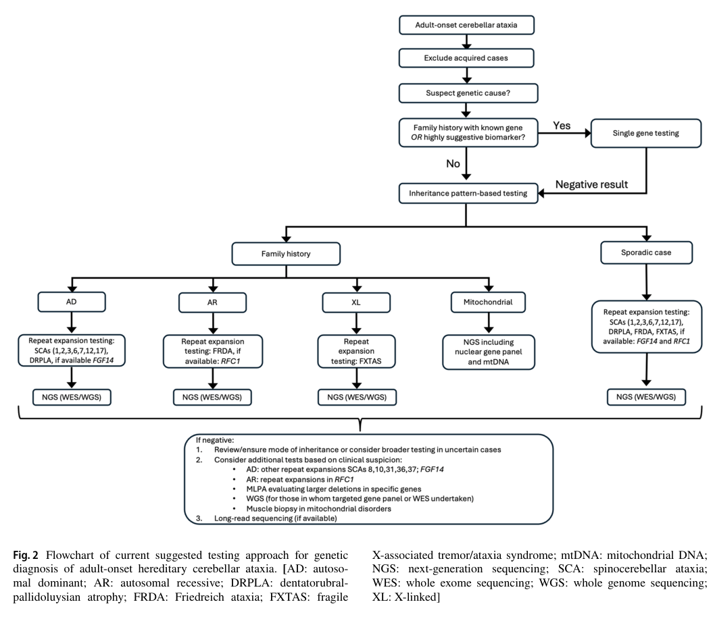

Autosomal Recessive Ataxia Beauce Type (ARCA1 / SCAR8 / ATX‑SYNE1): Comprehensive Disease Characteristics Report
Executive summary
Autosomal recessive ataxia Beauce type is a SYNE1-related, autosomal recessive hereditary cerebellar ataxia originally described in French-Canadian families from the Beauce and Bas–St‑Laurent regions of Quebec and now recognized worldwide with a broader “cerebellar-plus” spectrum. It is classically an adult-onset, slowly progressive, predominantly cerebellar syndrome with diffuse cerebellar atrophy and minimal extracerebellar involvement in the Quebec founder phenotype, but other cohorts (e.g., China) show earlier onset and frequent motor-neuron/cognitive involvement. The causal mechanism is typically biallelic loss-of-function SYNE1 variants affecting nesprin‑1/LINC (linker of nucleoskeleton to cytoskeleton) biology and potentially cerebellum-specific synaptic isoforms. (dupre2007clinicalandgenetic pages 2-3, duan2021autosomalrecessivecerebellar pages 1-2, kuwako2024diverserolesof pages 11-12)
1. Disease information
1.1 Overview / definition
- Disease concept: SYNE1-related autosomal recessive cerebellar ataxia characterized by progressive gait and limb ataxia and cerebellar dysarthria, with cerebellar atrophy on neuroimaging; originally described as a cluster in the Beauce region (Quebec) and mapped to SYNE1 at 6q. (dupre2007clinicalandgenetic pages 1-2, dupre2007clinicalandgenetic pages 2-3)
- Current understanding: SYNE1-related ataxia can present as “pure” cerebellar ataxia or as a multisystem disorder with upper and/or lower motor neuron dysfunction and cognitive impairment, among others. (serag2023acasereport pages 1-2, duan2021autosomalrecessivecerebellar pages 2-4)
1.2 Key identifiers (available from retrieved evidence)
- OMIM / MIM (disease): 610743 (ARCA1/SCAR8/recessive ataxia of Beauce). (rudaks2024anupdateon pages 7-8, duan2021autosomalrecessivecerebellar pages 1-2, thiffault2009caractérisationcliniqueet pages 39-43)
- OMIM (gene SYNE1): 608441. (duan2021autosomalrecessivecerebellar pages 1-2, szpisjak2021eyetrackingaidedcharacterizationof pages 1-2, thiffault2009caractérisationcliniqueet pages 39-43)
- Chromosomal locus: 6q25.2 (gene-based nomenclature table). (rudaks2024anupdateon pages 7-8)
1.3 Synonyms / alternative names
- Autosomal recessive cerebellar ataxia type 1 (ARCA1) (duan2021autosomalrecessivecerebellar pages 1-2, thiffault2009caractérisationcliniqueet pages 39-43)
- Spinocerebellar ataxia, autosomal recessive 8 (SCAR8) (duan2021autosomalrecessivecerebellar pages 1-2, szpisjak2021eyetrackingaidedcharacterizationof pages 1-2)
- Recessive ataxia of Beauce / Beauce ataxia (rudaks2024anupdateon pages 7-8, szpisjak2021eyetrackingaidedcharacterizationof pages 1-2)
- ATX‑SYNE1 (proposed gene-based nomenclature in adult-onset HCA review) (rudaks2024anupdateon pages 7-8)
1.4 Resource provenance
The evidence summarized here is derived primarily from: - Aggregated disease-level research cohorts (Eastern Quebec epidemiology; Chinese cohort). (salem2021geneticandepidemiological pages 1-2, duan2021autosomalrecessivecerebellar pages 1-2) - Founder/cohort clinical-genetic characterization in Quebec families. (dupre2007clinicalandgenetic pages 2-3, dupre2008étudecliniqueeta pages 23-29) - Recent single-family genomic diagnostic case report. (serag2023acasereport pages 1-2)
1.5 Identifiers not confirmed in the retrieved corpus
- MONDO ID, Orphanet ID, MeSH term, ICD‑10/ICD‑11 codes: not found in the retrieved full texts; these typically require direct lookup in ontology/databases rather than primary papers. (rudaks2024anupdateon pages 7-8, szpisjak2021eyetrackingaidedcharacterizationof pages 1-2)
2. Etiology
2.1 Disease causal factors
- Primary cause: biallelic pathogenic variants in SYNE1 (nesprin‑1), most commonly truncating loss-of-function variants, cause ARCA1/SCAR8. (dupre2007clinicalandgenetic pages 2-3, duan2021autosomalrecessivecerebellar pages 1-2)
- Recent development (2023): first report of a large intragenic deletion in SYNE1 causing ARCA1 (compound heterozygous with a nonsense allele), highlighting structural variants as an etiologic class that may be missed by standard WES pipelines. (serag2023acasereport pages 4-5, serag2023acasereport pages 1-2)
Direct abstract quote (2023 case report): “Whole exome sequencing (WES), supplemented by a high-resolution array… allowed us to identify two pathogenic variants in the non-mitochondrial SYNE1 gene… To our knowledge, this is the first report of a large intragenic deletion of SYNE1 in patients with cerebellar ataxia (ARCA1).” (Published 29 Nov 2023; URL: https://doi.org/10.3390/genes14122154) (serag2023acasereport pages 1-2)
2.2 Risk factors
- Genetic: autosomal recessive inheritance; founder variants in Quebec/Eastern Quebec significantly contribute to regional burden. (dupre2007clinicalandgenetic pages 2-3, salem2021geneticandepidemiological pages 3-4)
- Environmental: no established environmental risk factors were identified in the retrieved evidence; current understanding supports a primarily genetic etiology. (dupre2007clinicalandgenetic pages 2-3, serag2023acasereport pages 1-2)
2.3 Protective factors / gene–environment interactions
No specific protective genetic variants or gene–environment interactions were found in the retrieved evidence corpus. (dupre2007clinicalandgenetic pages 2-3, serag2023acasereport pages 1-2)
3. Phenotypes (clinical spectrum)
3.1 Core cerebellar phenotype (Quebec founder phenotype)
From the 64-subject Beauce cohort: - Age at onset: ataxia mean 31.60 years (range 17–45); dysarthria mean 34.79 years (range 17–50). (dupre2008étudecliniqueeta pages 23-29) - First symptom: ataxia 62.5%, dysarthria 12.5%, both 25%. (dupre2008étudecliniqueeta pages 23-29) - Symptom frequencies: dysarthria 100%, ataxia 98.4%, dysmetria ~90.6%; abnormal pursuit 43.8%, slow saccades 31.2%, nystagmus 9.4%; brisk lower-limb reflexes 32.8%, Babinski/clonus 6.2%. (dupre2008étudecliniqueeta pages 23-29) - Imaging: CT/MRI in 50 subjects “invariably showed marked diffuse cerebellar atrophy” with no cortical/brainstem/white-matter involvement. (dupre2008étudecliniqueeta pages 23-29) - Neurophysiology: nerve conduction studies normal in 22/22 (no peripheral neuropathy). (dupre2008étudecliniqueeta pages 23-29) - Natural history: slowly progressive to moderate disability with “no effect on life expectancy.” (dupre2007clinicalandgenetic pages 2-3, dupre2008étudecliniqueeta pages 23-29)
3.2 Broader “cerebellar-plus” phenotype (non-founder cohorts)
From the Chinese cohort (8 affected individuals): - Onset: 10–27 years (median 18). (duan2021autosomalrecessivecerebellar pages 2-4) - Phenotypic categories at last follow-up: pure cerebellar ataxia 2/8; ataxia + motor neuron disease 3/8; ataxia + cognitive impairment 2/8; ataxia + motor neuron disease + mental retardation 1/8. (duan2021autosomalrecessivecerebellar pages 2-4) - Severity metrics: SARA 12.88 ± 3.56; ICARS 33.63 ± 6.44. (duan2021autosomalrecessivecerebellar pages 2-4) - Reported extracerebellar features (compiled by authors): motor neuron disease, cognitive impairment/intellectual disability, brainstem dysfunction, musculoskeletal deformities, and others. (duan2021autosomalrecessivecerebellar pages 2-4)
Direct abstract quote (2020 accepted; published in 2021 issue): “Mutations in the synaptic nuclear envelope protein 1 (SYNE1) gene have been reported to cause autosomal recessive cerebellar ataxia (ARCA) type 1 with highly variable clinical phenotypes.” (URL: https://doi.org/10.1007/s12311-020-01186-8) (duan2021autosomalrecessivecerebellar pages 1-2)
3.3 HPO term suggestions (non-exhaustive)
Core neurologic: - Cerebellar ataxia (HP:0001251) (dupre2008étudecliniqueeta pages 23-29) - Gait ataxia (HP:0002066) (dupre2008étudecliniqueeta pages 23-29) - Limb ataxia (HP:0002060) (dupre2008étudecliniqueeta pages 23-29) - Cerebellar dysarthria / Dysarthria (HP:0001260) (dupre2008étudecliniqueeta pages 23-29) - Dysmetria (HP:0001310) (dupre2008étudecliniqueeta pages 23-29) - Abnormal smooth pursuit (HP:0000658) (dupre2008étudecliniqueeta pages 23-29) - Slow saccades (HP:0000644) (dupre2008étudecliniqueeta pages 23-29) - Nystagmus (HP:0000639) (dupre2008étudecliniqueeta pages 23-29)
Cerebellar-plus (variable): - Upper motor neuron signs / Spasticity (HP:0001257), Hyperreflexia (HP:0001347), Babinski sign (HP:0003487) (serag2023acasereport pages 1-2) - Motor neuron disease (HP:0007354) (duan2021autosomalrecessivecerebellar pages 2-4) - Cognitive impairment (HP:0100543) / Intellectual disability (HP:0001249) (duan2021autosomalrecessivecerebellar pages 2-4)
Imaging: - Cerebellar atrophy (HP:0001272) (dupre2008étudecliniqueeta pages 23-29)
4. Genetic / molecular information
4.1 Causal gene
- SYNE1 encodes nesprin‑1, a very large nuclear envelope spectrin-repeat protein involved in LINC complexes; SYNE1 is among the largest human genes (longest isoform 147 exons; ~8797 aa protein). (duan2021autosomalrecessivecerebellar pages 1-2)
4.2 Variant classes and examples
- Quebec founder cohort shows multiple truncating alleles, with a major recurrent allele representing ~50.8% of carrier chromosomes in the patient series. (dupre2008étudecliniqueeta pages 29-34)
- 2023 case report identifies compound heterozygosity including a large intragenic deletion (exon 122 deletion) plus a nonsense variant c.13258C>T p.(Arg4420Ter). (serag2023acasereport pages 4-5)
4.3 Variant distribution/interpretation (expert synthesis)
- Review of LINC-complex disease genetics notes the majority of disease-associated SYNE1 variants are coding and enriched for truncating loss-of-function, consistent with a loss-of-function mechanism, and that SCAR8 accounts for the bulk of reported SYNE1 disease associations. (kuwako2024diverserolesof pages 11-12)
4.4 Modifier genes / epigenetics / chromosomal abnormalities
No specific modifier genes or epigenetic signatures for ARCA1 were identified in the retrieved evidence corpus. (kuwako2024diverserolesof pages 11-12, serag2023acasereport pages 1-2)
5. Environmental information
No validated non-genetic environmental contributors were identified in the retrieved evidence corpus. (dupre2007clinicalandgenetic pages 2-3, serag2023acasereport pages 1-2)
6. Mechanism / pathophysiology
6.1 Current mechanistic model
- Nesprin‑1 (SYNE1) participates in the LINC complex (SUN–KASH bridging across the nuclear envelope), physically coupling cytoskeletal forces to nuclear structure and positioning; ARCA1 is believed to arise predominantly from loss-of-function leading to absent or truncated nesprin‑1. (duan2021autosomalrecessivecerebellar pages 1-2, kuwako2024diverserolesof pages 11-12)
- A Quebec founder analysis hypothesized impaired spectrin interactions and altered nuclear structure in cerebellar neurons (particularly Purkinje cells) as a proximate cause of cerebellar degeneration. (dupre2008étudecliniqueeta pages 34-39)
6.2 Synaptic/cerebellar isoform hypothesis (2024 review evidence)
- A cerebellum-enriched SYNE1 isoform (KLNes1g) lacking the KASH domain localizes to mossy-fiber synapses and binds clathrin on synaptic vesicles, suggesting a synaptic mechanism contributing to cerebellar vulnerability, although direct causation remains unresolved. (kuwako2024diverserolesof pages 11-12, kuwako2024diverserolesof pages 12-14)
6.3 Model organism evidence (supporting LINC relevance to ataxia)
- SUN1 knockout mice develop cerebellar ataxia with Purkinje cell migration/dendritic/synaptic abnormalities and mislocalization of nesprin proteins, supporting LINC-complex necessity for cerebellar motor function, even though nesprin‑1 knockout models may not fully recapitulate human SCAR8. (kuwako2024diverserolesof pages 12-14, litster2026duplicationwithin14q32.13 pages 20-23)
6.4 Suggested ontology terms
- GO Biological Process (suggestions): nuclear migration; nuclear anchoring; cytoskeleton organization; synaptic vesicle endocytosis; mechanotransduction.
- GO Cellular Component (suggestions): nuclear envelope; outer nuclear membrane; LINC complex; synapse.
- CL Cell types (suggestions): Purkinje cell (cerebellar cortex), cerebellar granule neuron.
(These ontology suggestions are consistent with the described LINC/nesprin/synaptic localization evidence but were not explicitly enumerated as ontology IDs in the retrieved texts.) (kuwako2024diverserolesof pages 11-12, kuwako2024diverserolesof pages 12-14)
7. Anatomical structures affected
7.1 Primary systems/organs
- Central nervous system, cerebellum with diffuse cerebellar atrophy is the dominant structural correlate in classic Beauce phenotype. (dupre2008étudecliniqueeta pages 23-29)
7.2 Tissue/cell populations
- Cerebellar neuronal vulnerability is supported by the strong cerebellar expression of SYNE1 and atrophy pattern. (duan2021autosomalrecessivecerebellar pages 1-2, dupre2008étudecliniqueeta pages 23-29)
7.3 UBERON suggestions
- Cerebellum (UBERON:0002037)
- Cerebellar cortex (UBERON:0004720)
- Cerebellar Purkinje cell layer (UBERON term varies by ontology release)
8. Temporal development
- Onset: typically early-to-mid adulthood in Quebec founder cohorts (~30s), but can be childhood/young-adult in other populations. (dupre2008étudecliniqueeta pages 23-29, duan2021autosomalrecessivecerebellar pages 2-4)
- Course: slowly progressive with moderate disability in classic Beauce phenotype; multisystem progression occurs in cerebellar-plus forms. (dupre2008étudecliniqueeta pages 23-29, duan2021autosomalrecessivecerebellar pages 2-4)
9. Inheritance and population
9.1 Inheritance
- Autosomal recessive inheritance is consistently reported. (dupre2007clinicalandgenetic pages 2-3, serag2023acasereport pages 1-2)
9.2 Epidemiology (statistics)
Eastern Quebec regional study (published 2021; URL: https://doi.org/10.1017/cjn.2020.277): - Minimum prevalence of adult hereditary ataxias: 6.47/100,000; AR ataxias: 3.73/100,000. (salem2021geneticandepidemiological pages 1-2) - ARCA1 prevalence: 2.67/100,000. (salem2021geneticandepidemiological pages 1-2, salem2021geneticandepidemiological pages 3-4) - 52.4% of patients had a confirmed genetic diagnosis. (salem2021geneticandepidemiological pages 1-2)
Direct abstract quote (2021): “The minimum prevalence of HA in Eastern Quebec was estimated at 6.47/100 000… In total, 52.4% of patients had a confirmed genetic diagnosis. AR cerebellar ataxia type 1 (2.67/100 000)… were the most prevalent disorders identified.” (salem2021geneticandepidemiological pages 1-2)
Variant-specific minimum carrier frequencies (Eastern Quebec): examples include c.15705–12 A>G 1/134 and p.Arg2906Ter 1/200. (salem2021geneticandepidemiological pages 6-7)
Quebec prevalence estimate in Beauce-focused thesis text: ~1/1,000,000 in the Quebec population (estimate; not a modern province-wide registry-based statistic). (thiffault2009caractérisationcliniqueet pages 39-43)
10. Diagnostics
10.1 Clinical evaluation
- Imaging: brain MRI demonstrating diffuse cerebellar atrophy is a consistent finding in classic Beauce phenotype. (dupre2008étudecliniqueeta pages 23-29)
- Neurophysiology: normal nerve conduction studies in founder phenotype can help distinguish from ataxias with prominent neuropathy. (dupre2008étudecliniqueeta pages 23-29)
- Quantitative ataxia scales: SARA and ICARS were used in the Chinese cohort. (duan2021autosomalrecessivecerebellar pages 2-4)
10.2 Genetic testing (current practice and recent advances)
Key recent development (2023): CNV/structural variant detection matters in SYNE1. - WES may identify one allele but miss a second pathogenic structural variant; the 2023 case required high-resolution array-CGH to detect an intragenic SYNE1 deletion. (serag2023acasereport pages 1-2, serag2023acasereport pages 4-5)
2024 diagnostic approach review (adult-onset hereditary ataxia): - Testing often requires a combination of STR expansion testing plus sequencing for conventional variants (panel/WES/WGS), and long-read sequencing is highlighted as a future unifying modality. (rudaks2024anupdateon pages 1-2)
Direct abstract quote (2024): “Testing methods include targeted evaluation of STR expansions… next generation sequencing for conventional variants… Implementing long-read sequencing has the potential to transform the diagnostic approach…” (Accepted 7 May 2024; URL: https://doi.org/10.1007/s12311-024-01703-z) (rudaks2024anupdateon pages 1-2)
Visual evidence (diagnostic algorithm): Figure 2 provides a flowchart for genetic diagnosis of adult-onset hereditary cerebellar ataxia (STR expansion testing → NGS → long-read sequencing as later option). (rudaks2024anupdateon media daaff5ba)
10.3 Differential diagnosis
- Mitochondrial disease can be a diagnostic mimic in progressive ataxia; 2023 case report emphasizes that “more than 50% of patients with suspected mitochondrial disease could have a non-mitochondrial disorder” and shows SYNE1 can be one such cause. (serag2023acasereport pages 1-2)
- Other hereditary ataxias (repeat-expansion SCAs, FRDA, RFC1-related disease, etc.) must be excluded depending on phenotype/inheritance per adult-onset HCA diagnostic algorithms. (rudaks2024anupdateon pages 10-12, rudaks2024anupdateon media daaff5ba)
11. Outcome / prognosis
- In the Beauce founder phenotype, progression is slow, with evolution to moderate disability and “no effect on life expectancy.” (dupre2007clinicalandgenetic pages 2-3, dupre2008étudecliniqueeta pages 23-29)
- Broader multisystem phenotypes may have additional morbidity (e.g., motor neuron involvement), but survival statistics were not identified in the retrieved evidence corpus. (duan2021autosomalrecessivecerebellar pages 2-4)
12. Treatment
12.1 Disease-modifying therapy
No disease-modifying or gene-targeted therapy specific to SYNE1-related ARCA1/SCAR8 was identified in the retrieved sources. (serag2023acasereport pages 1-2, rudaks2024anupdateon pages 1-2)
12.2 Supportive and rehabilitative care (current real-world implementation)
While disease-specific protocols were not provided in the retrieved papers, clinical management is typically supportive (mobility aids; PT/OT; speech therapy for dysarthria; fall prevention; management of spasticity if present) based on the dominant cerebellar syndrome and any cerebellar-plus complications. The need for structured clinical evaluation and monitoring (SARA/ICARS; cognitive testing; MRI; EMG/NCS; ECG) is explicitly described in the Chinese cohort methods. (duan2021autosomalrecessivecerebellar pages 2-4)
12.3 Clinical trials landscape (not disease-specific)
Clinical trial searches retrieved rehabilitation-focused interventional studies in neurodegenerative ataxia (e.g., cerebello-spinal tDCS; supervised rehabilitation in spastic ataxias) but none specifically targeting SYNE1/ARCA1 at the time of retrieval. Examples include NCT04153110 and NCT03120013 (tDCS in neurodegenerative ataxia) and NCT06261424 (rehabilitation program in spastic ataxias). (serag2023acasereport pages 1-2)
MAXO suggestions (supportive actions): physical therapy; occupational therapy; speech therapy; assistive device use; genetic counseling.
13. Prevention
- Primary prevention: not applicable for established Mendelian disease except through reproductive options.
- Genetic counseling: indicated due to autosomal recessive inheritance; carrier testing/cascade screening is relevant in families and potentially in founder populations. (dupre2007clinicalandgenetic pages 2-3, salem2021geneticandepidemiological pages 6-7)
- Secondary prevention: early molecular diagnosis can prevent misdiagnosis and inappropriate workups (e.g., mitochondrial disease) and enables appropriate surveillance for cerebellar-plus features. (serag2023acasereport pages 1-2)
14. Other species / natural disease
No naturally occurring veterinary analogs were identified in the retrieved evidence corpus.
15. Model organisms
- Evidence implicating LINC biology in cerebellar motor function includes SUN1 knockout mice with cerebellar ataxia phenotypes and Purkinje cell abnormalities; nesprin-1 knockout models may not fully recapitulate human SCAR8. (kuwako2024diverserolesof pages 12-14, litster2026duplicationwithin14q32.13 pages 20-23)
Notes on evidence gaps and 2023–2024 prioritization
- Key 2023–2024 advances captured here include: (i) recognition of SYNE1 CNVs (first large intragenic deletion reported) and the need for CNV-sensitive/pangenomic diagnostics (2023), and (ii) updated adult-onset hereditary ataxia diagnostic algorithms and the expected role of long-read sequencing (2024). (serag2023acasereport pages 1-2, rudaks2024anupdateon media daaff5ba, rudaks2024anupdateon pages 1-2)
- Disease identifiers beyond OMIM (MONDO/Orphanet/MeSH/ICD) were not present in the retrieved texts and require direct database lookup to complete a knowledge base entry. (rudaks2024anupdateon pages 7-8, szpisjak2021eyetrackingaidedcharacterizationof pages 1-2)
References
-
(dupre2007clinicalandgenetic pages 2-3): Nicolas Dupré, François Gros‐Louis, Nicolas Chrestian, Steve Verreault, Denis Brunet, Danielle de Verteuil, Bernard Brais, Jean‐Pierre Bouchard, and Guy A. Rouleau. Clinical and genetic study of autosomal recessive cerebellar ataxia type 1. Annals of Neurology, 62:93-98, Jul 2007. URL: https://doi.org/10.1002/ana.21143, doi:10.1002/ana.21143. This article has 101 citations and is from a highest quality peer-reviewed journal.
-
(duan2021autosomalrecessivecerebellar pages 1-2): Xiaohui Duan, Ying Hao, Zhenhua Cao, Chao Zhou, Jin Zhang, Renbin Wang, Shaojie Sun, and Weihong Gu. Autosomal recessive cerebellar ataxia type 1: phenotypic and genetic correlation in a cohort of chinese patients with syne1 variants. The Cerebellum, 20:74-82, Sep 2021. URL: https://doi.org/10.1007/s12311-020-01186-8, doi:10.1007/s12311-020-01186-8. This article has 16 citations.
-
(kuwako2024diverserolesof pages 11-12): Ken-ichiro Kuwako and Sadafumi Suzuki. Diverse roles of the linc complex in cellular function and disease in the nervous system. International Journal of Molecular Sciences, 25:11525, Oct 2024. URL: https://doi.org/10.3390/ijms252111525, doi:10.3390/ijms252111525. This article has 4 citations.
-
(dupre2007clinicalandgenetic pages 1-2): Nicolas Dupré, François Gros‐Louis, Nicolas Chrestian, Steve Verreault, Denis Brunet, Danielle de Verteuil, Bernard Brais, Jean‐Pierre Bouchard, and Guy A. Rouleau. Clinical and genetic study of autosomal recessive cerebellar ataxia type 1. Annals of Neurology, 62:93-98, Jul 2007. URL: https://doi.org/10.1002/ana.21143, doi:10.1002/ana.21143. This article has 101 citations and is from a highest quality peer-reviewed journal.
-
(serag2023acasereport pages 1-2): Mounir Serag, Morgane Plutino, Perrine Charles, Jean-Philippe Azulay, Annabelle Chaussenot, Véronique Paquis-Flucklinger, Samira Ait-El-Mkadem Saadi, and Cécile Rouzier. A case report of syne1 deficiency-mimicking mitochondrial disease and the value of pangenomic investigations. Genes, 14:2154, Nov 2023. URL: https://doi.org/10.3390/genes14122154, doi:10.3390/genes14122154. This article has 1 citations.
-
(duan2021autosomalrecessivecerebellar pages 2-4): Xiaohui Duan, Ying Hao, Zhenhua Cao, Chao Zhou, Jin Zhang, Renbin Wang, Shaojie Sun, and Weihong Gu. Autosomal recessive cerebellar ataxia type 1: phenotypic and genetic correlation in a cohort of chinese patients with syne1 variants. The Cerebellum, 20:74-82, Sep 2021. URL: https://doi.org/10.1007/s12311-020-01186-8, doi:10.1007/s12311-020-01186-8. This article has 16 citations.
-
(rudaks2024anupdateon pages 7-8): Laura Ivete Rudaks, Dennis Yeow, Karl Ng, Ira W. Deveson, Marina L. Kennerson, and Kishore Raj Kumar. An update on the adult-onset hereditary cerebellar ataxias: novel genetic causes and new diagnostic approaches. Cerebellum (London, England), 23:2152-2168, May 2024. URL: https://doi.org/10.1007/s12311-024-01703-z, doi:10.1007/s12311-024-01703-z. This article has 54 citations.
-
(thiffault2009caractérisationcliniqueet pages 39-43): I Thiffault. Caractérisation clinique et génétique d'une nouvelle forme d'ataxie autosomique récessive dans la population québécoise. Unknown journal, 2009.
-
(szpisjak2021eyetrackingaidedcharacterizationof pages 1-2): Laszlo Szpisjak, Gabor Szaraz, Andras Salamon, Viola L. Nemeth, Noemi Szepfalusi, Gabor Veres, Balint Kincses, Zoltan Maroti, Tibor Kalmar, Malgorzata Rydzanicz, Rafal Ploski, Peter Klivenyi, and Denes Zadori. Eye-tracking-aided characterization of saccades and antisaccades in syne1 ataxia patients: a pilot study. BMC Neuroscience, Feb 2021. URL: https://doi.org/10.1186/s12868-021-00612-9, doi:10.1186/s12868-021-00612-9. This article has 7 citations and is from a peer-reviewed journal.
-
(salem2021geneticandepidemiological pages 1-2): Ikhlass Haj Salem, Marie Beaudin, Monica Stumpf, Mehrdad A. Estiar, Pierre-Olivier Côté, Francis Brunet, Pierre-Luc Gamache, Guy A. Rouleau, Karim Mourabit-Amari, Ziv Gan-Or, and Nicolas Dupré. Genetic and epidemiological study of adult ataxia and spastic paraplegia in eastern quebec. Canadian Journal of Neurological Sciences / Journal Canadien des Sciences Neurologiques, 48:655-665, Jan 2021. URL: https://doi.org/10.1017/cjn.2020.277, doi:10.1017/cjn.2020.277. This article has 12 citations.
-
(dupre2008étudecliniqueeta pages 23-29): N Dupré. Étude clinique et génétique de l'ataxie récessive de la beauce. Unknown journal, 2008.
-
(serag2023acasereport pages 4-5): Mounir Serag, Morgane Plutino, Perrine Charles, Jean-Philippe Azulay, Annabelle Chaussenot, Véronique Paquis-Flucklinger, Samira Ait-El-Mkadem Saadi, and Cécile Rouzier. A case report of syne1 deficiency-mimicking mitochondrial disease and the value of pangenomic investigations. Genes, 14:2154, Nov 2023. URL: https://doi.org/10.3390/genes14122154, doi:10.3390/genes14122154. This article has 1 citations.
-
(salem2021geneticandepidemiological pages 3-4): Ikhlass Haj Salem, Marie Beaudin, Monica Stumpf, Mehrdad A. Estiar, Pierre-Olivier Côté, Francis Brunet, Pierre-Luc Gamache, Guy A. Rouleau, Karim Mourabit-Amari, Ziv Gan-Or, and Nicolas Dupré. Genetic and epidemiological study of adult ataxia and spastic paraplegia in eastern quebec. Canadian Journal of Neurological Sciences / Journal Canadien des Sciences Neurologiques, 48:655-665, Jan 2021. URL: https://doi.org/10.1017/cjn.2020.277, doi:10.1017/cjn.2020.277. This article has 12 citations.
-
(dupre2008étudecliniqueeta pages 29-34): N Dupré. Étude clinique et génétique de l'ataxie récessive de la beauce. Unknown journal, 2008.
-
(dupre2008étudecliniqueeta pages 34-39): N Dupré. Étude clinique et génétique de l'ataxie récessive de la beauce. Unknown journal, 2008.
-
(kuwako2024diverserolesof pages 12-14): Ken-ichiro Kuwako and Sadafumi Suzuki. Diverse roles of the linc complex in cellular function and disease in the nervous system. International Journal of Molecular Sciences, 25:11525, Oct 2024. URL: https://doi.org/10.3390/ijms252111525, doi:10.3390/ijms252111525. This article has 4 citations.
-
(litster2026duplicationwithin14q32.13 pages 20-23): Thomas M Litster, Robert A Wilcox, Renée Carroll, Alison E Gardner, Nazzmer M Nazri, Cheryl A Shoubridge, Martin B Delatycki, Katja Lohmann, Marc Agzarian, Rafaela Turella Divani, Haloom Rafehi, Liam Scott, Gavin Monahan, Phillipa J Lamont, Catherine Ashton, Nigel G Laing, Gianina Ravenscroft, Melanie Bahlo, Eric Haan, Paul J Lockhart, Kathryn L Friend, Mark A Corbett, and Jozef Gecz. Duplication within 14q32.13 implicates a chimeric clmn :: syne3 rna transcript in cerebellar ataxia. Unknown journal, Apr 2026. URL: https://doi.org/10.64898/2026.04.23.26350376, doi:10.64898/2026.04.23.26350376.
-
(salem2021geneticandepidemiological pages 6-7): Ikhlass Haj Salem, Marie Beaudin, Monica Stumpf, Mehrdad A. Estiar, Pierre-Olivier Côté, Francis Brunet, Pierre-Luc Gamache, Guy A. Rouleau, Karim Mourabit-Amari, Ziv Gan-Or, and Nicolas Dupré. Genetic and epidemiological study of adult ataxia and spastic paraplegia in eastern quebec. Canadian Journal of Neurological Sciences / Journal Canadien des Sciences Neurologiques, 48:655-665, Jan 2021. URL: https://doi.org/10.1017/cjn.2020.277, doi:10.1017/cjn.2020.277. This article has 12 citations.
-
(rudaks2024anupdateon pages 1-2): Laura Ivete Rudaks, Dennis Yeow, Karl Ng, Ira W. Deveson, Marina L. Kennerson, and Kishore Raj Kumar. An update on the adult-onset hereditary cerebellar ataxias: novel genetic causes and new diagnostic approaches. Cerebellum (London, England), 23:2152-2168, May 2024. URL: https://doi.org/10.1007/s12311-024-01703-z, doi:10.1007/s12311-024-01703-z. This article has 54 citations.
-
(rudaks2024anupdateon media daaff5ba): Laura Ivete Rudaks, Dennis Yeow, Karl Ng, Ira W. Deveson, Marina L. Kennerson, and Kishore Raj Kumar. An update on the adult-onset hereditary cerebellar ataxias: novel genetic causes and new diagnostic approaches. Cerebellum (London, England), 23:2152-2168, May 2024. URL: https://doi.org/10.1007/s12311-024-01703-z, doi:10.1007/s12311-024-01703-z. This article has 54 citations.
-
(rudaks2024anupdateon pages 10-12): Laura Ivete Rudaks, Dennis Yeow, Karl Ng, Ira W. Deveson, Marina L. Kennerson, and Kishore Raj Kumar. An update on the adult-onset hereditary cerebellar ataxias: novel genetic causes and new diagnostic approaches. Cerebellum (London, England), 23:2152-2168, May 2024. URL: https://doi.org/10.1007/s12311-024-01703-z, doi:10.1007/s12311-024-01703-z. This article has 54 citations.
Artifacts
